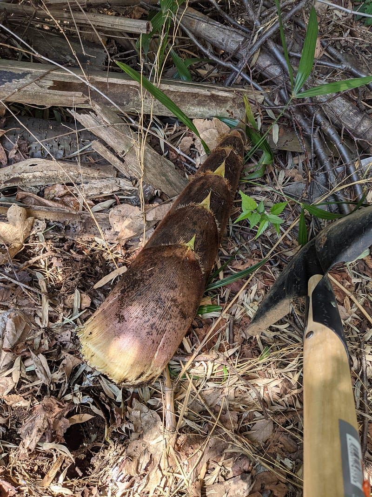
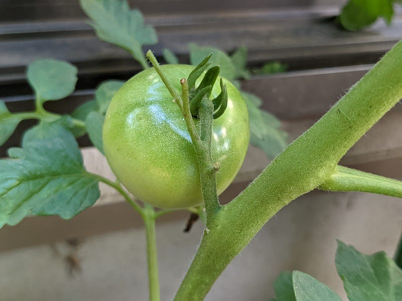
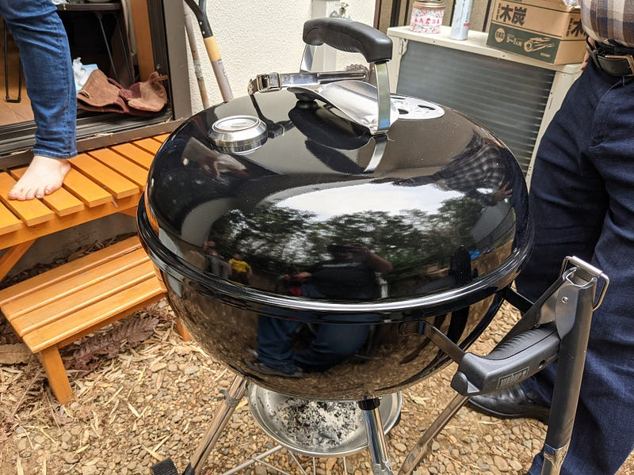
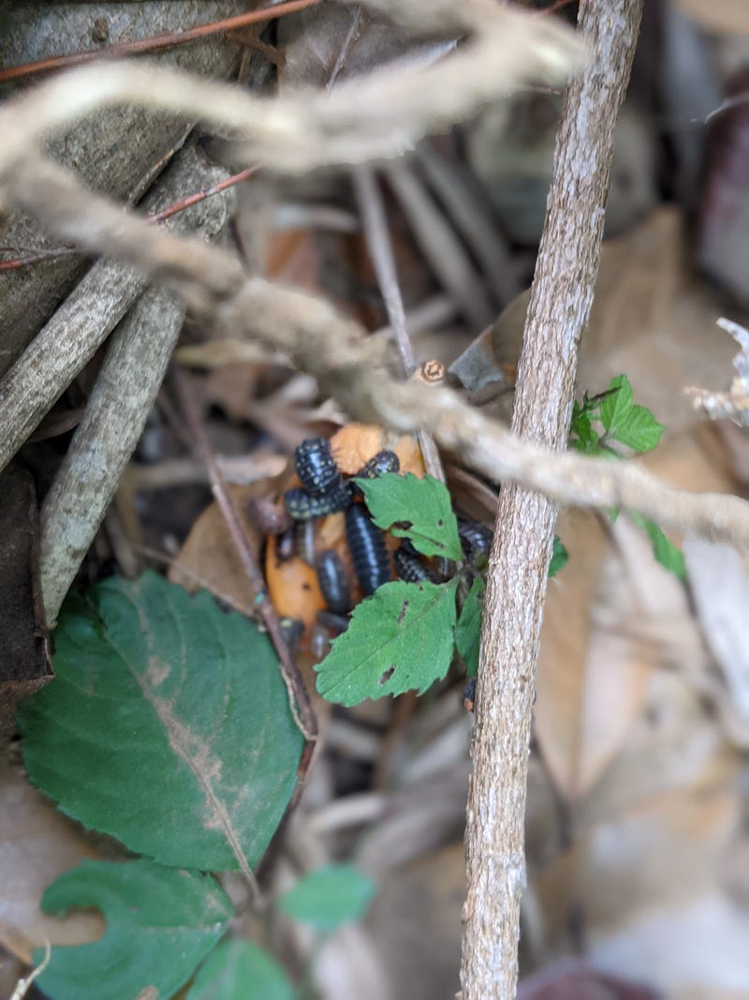
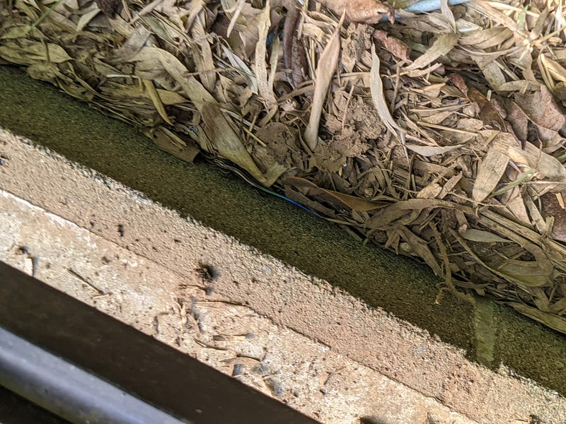
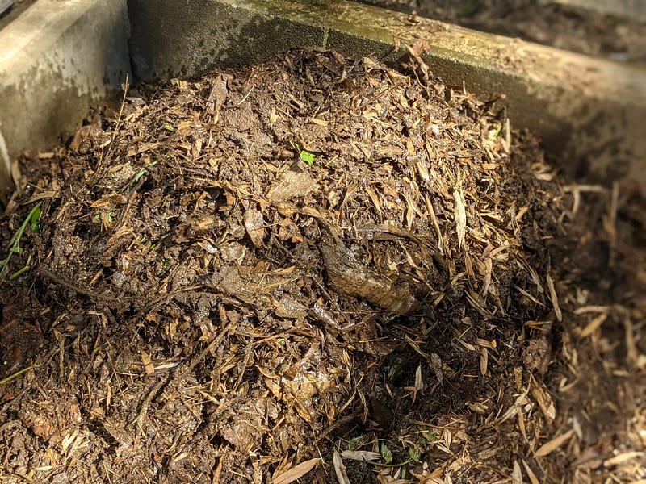
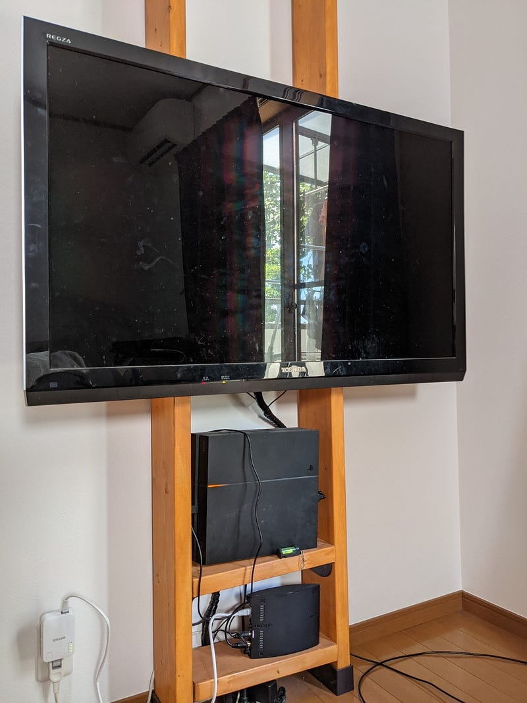
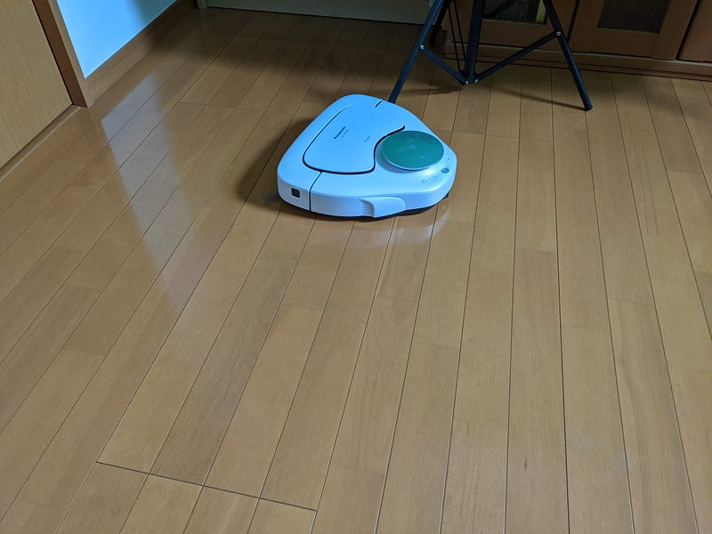

戸建てに引っ越して（6ヶ月レポート）
戸建てに引っ越して（6ヶ月レポート）
前回の家購入と引っ越しの話に割と反響があったのでその後のレポートです。といっても本当にレポートで特に落ちはないです。あしからず。
庭
庭は…いい。前の住人の方が残していった琵琶の木やあじさいがあるのでその辺りを剪定したり、（我が家の敷地外ではあるんだけど、とっていいとのことなので）迫り来る竹から生えてくる竹の子をせっせと掘って、3～5月の間楽しんだ。

梅雨があけてからは野菜やハーブをちょっと育ててみている。とは言え、直接地面に植えるのではなく、プランター。現在トマトとルッコラとローズマリーが育っている。

たまにBBQしてみたり、自分で組み立てたベンチにちょっと座ってみたりしてるくらいでそれほど活用してないが、やはりちょっとエスケープ出来る場所があるのは素晴らしい。目の前が林で何もないから余計そう思う。

あとは木の剪定をしたり、大量の竹の葉をどうにかするためになんちゃってコンポストを作ったりしている。コンポストに住んでいるミミズが愛おしい。
そんなこんなで土を掘り返したり木を切ったりするのはわりと好きなことが実感できた。
このあたりの作業のためにシャベル、竹用鋸、汎用鋸、高枝はさみ、剪定はさみ、鎌、除草剤などは引っ越し直後に買って、どれも重宝してる。本当はあとは竹を割るための鉈が欲しいのだが、それはまた後ほど、という感じ。
庭の住人達
庭にはそれなりに生き物が住んでいる
一番多いのは何といってもやぶ蚊だが、こいつらは定期的なスプレーの噴射により、ある程度コントロールできている。
次に多いのはダンゴムシ。とにかくあちこちにいる。5月に琵琶の実が熟して落ちてくると、次の日には琵琶の実のまわりはダンゴムシだらけになっていた。このようにして庭中のなにがしかを食べまくっている。すごい食欲。

現在は後述の竹の地下茎を掘り出したものを一時的においてあるスポットがやつらの住処になっている。そこに置いてある地下茎や枝の間を除くとうようよいる。虫嫌いの人はきっと見られない光景だろう。
あと、キレイな光沢がかかった青っぽい、グレーっぽい体の色のトカゲの一家がそのあたりをチョロチョロしている。最初見たときは成体が2匹だったのだが、7月半ばをすぎたら小さ目のやつが3匹ほど顔を出すようになった。

また、このあたりはアゲハが結構いる模様。黒アゲハっぽいのがよく飛んでる。
一回アシナガバチっぽいのが庭に巣作りをしようとしているのを見つけた。後述の地下茎を掘り出すタイミングだったので残念ながら住み着くのは諦めたようだ
竹の侵入
が、引っ越して4か月目くらいに発見してしまった。前住人が見逃していたくさい竹の地下茎が庭に… とはいえ、竹林が裏にある家を買ったのでいつか竹と戦う日が来るのはわかっていた。もう戦うのか、とは思ったけど想定通りではあった。
とりあえず庭中を確認し、合計3本の地下茎を確認。全部引っこ抜けるところまではひっこぬいて、侵入箇所を特定。造園屋さんに連絡して、どうにかしてくれ、という依頼までしたが、まだ工事はしていない。とりあえず自分が仕入れた知識としては
- 地下茎の侵入そのものを完璧に防ぐのは相当がんばらないと無理
- しかし、侵入されたところで対症療法をちゃんとやっていればそのうち枯れる
ということだったので、基本方針としては、以下のようにした。
- 定期的に家の外を見回り、敷地の外に地下茎を見つけたら即切断等の処理をする
- 敷地内に侵入されたら都度対処
- 対処する際にはとりあえず現実的にやるならこの程度だろう、という妨害だけをするにとどめる
- それをさらに超えて侵入された場合はとにかく対症療法をがんばる
あとは雑草対策も含めてレンガ敷きにして侵入されてしまった際の竹の栄養補給を邪魔しようと思っているのだけど、そこまでは手を付けていない
なんちゃってコンポスト
前述のとおり、掃いても掃いても竹の葉が竹林から落ちてくる。これを掃除して捨てるのか…と思うと気が重いので、「これでコンポストしよう」と決めた。これならまだなにか生き物を飼う感覚で落ち葉に対処できる。

コンポストは本来であればちゃんと内容物に気を付けて発酵温度の管理をする必要があるのだけど、これは基本的には竹の葉から腐葉土を作りたい、というだけなのであまり厳密にやってない。なのでなんちゃってコンポスト。
とりあえず定期的に出てくる雑草、剪定した葉っぱ、そしてたま～にスイカの皮とかブロッコリーの芯とかをいれつつ、あとは残り全て竹の葉っぱを集めて山を作っているだけ。
これに毎日水をかけて濡らして、毎日ひっくり返して酸素を供給しているだけ。もちろん熱処理はされていないので雑草の種子やらなにやら色々入っているしこのまま肥料としては使えないが、何もしないのに比べたらぐんぐん腐っていくのがわかるし、そのまま落ち葉をゴミに出すよりかはなんだか楽しい。
また前述のとおりミミズが数匹住んでおり、こいつらがここをえさ場にしているのかと思うとなんとなく世話をするのにも愛着がわいている。ミミズかわいい。
初めてのディアウォール

引っ越す際にもう2度とテレビラックを買いたくないと心に誓っていたので、引っ越してきて1か月目でディアウォールを買って、2x6材でテレビを壁掛けできるようにした。
若井産業 WAKAI ツーバイフォー材専用壁面突っ張りシステム 2×6 ディアウォールS ブラック DWS26BKamzn.to
ディアウォール自体はわかりやすかったし、便利だったし、すごいよかったのだけど、一番面倒くさかったのはこの2x6材の塗装。いくらド素人がやるにしても無垢はあかんやろ… ということで塗装したんだけど、重ね塗りするとなると1日仕事だし、置く場所も庭でうまいこと確保しないといけないし… で大変面倒くさかった。
テレビの設置は適当に合う機材を探したらあとは特に問題なかった。
テレビ壁掛け金具・天吊り金具の専門店です。どのテレビメーカーにも対応するテレビ金具を豊富に取り扱っています。DIYでの壁掛け設置方法が充実。設置業者の紹介も可能。壁掛けテレビの設置事例も多数ご紹介。kabekaketv-shop.com
また、この作業をする前にマキタのドライバドリル買っておいて本当によかった。打つ数はすくないんだけど、こんなの絶対人力でやりたくない。
マキタ(Makita) 充電式ドライバドリル 10.8V 本体付属バッテリー1個搭載モデル DF330DWSPamzn.to
屋内掃除
広くなった分掃除が辛くなるのではないかと思っていたが、夫婦とも8割くらいキレイなら良し、というタイプなので、隔日ロボット掃除機＋週末の掃除機・モップがけ程度で特に支障なくできている。
ロボット掃除機導入のコツはとにかく普段から床にものをなるたけ置かない事である。これは子供の片付けを促すのにも使えるので大変良い（「床に置いてあるおもちゃは全部ルンバが食べて捨てちゃうよー」で少なくとも一時的にはなんとかなる）
ロボット掃除機本体に関しては元から持っていたルンバの旧モデル（860型）と、今回2階用に新規に購入したRULOを使っている。
パナソニック ロボット掃除機 RULO(ルーロ) お掃除ロボット ホワイト MC-RSF600-Wamzn.to
ルンバ960 アイロボット ロボット掃除機 カメラセンサー カーペット 畳 段差乗り越え wifi対応 自動充電・運転再開 吸引力 マッピング【Alexa対応】amzn.to
（上記のルンバはもちろん新型で、うちのは旧型）

使ってみた感想としては、日本家屋ではルンバよりRULOのほうがよいのでは？という感じ。
新型はどうなのか知らないけど、旧型ルンバは基本壁とかにぶつかりながらランダムに動いて掃除していくので段差とかを検知できないし、あと隙間に突っ込んでいくので時々そこにはまって出られないことが多い。
これに対してRULOは光学センサーを積んでいるのか、基本的に壁等にはぶつからないし、段差も検知して勝手に階段とかも避けてくれる。2階にRULOを設置したのはこのためだ。また、スマホと連動することによってスマホから掃除の開始・停止等ができるし、どの位置を掃除したかも記録を見返すことができる。これはこれでなかなか便利だ。
ここまで使ってきて、RULOは何かにぶつかって挟まって動作不能になる、ということは一回も起こしてない。なかなか頭がよいといえる。そのかわり、ルンバは引っ掛かりさえしなければ何があっても充電ステーションに戻っていたのだが、RULOは時々それまでの頭がよかったのがどこかに行ってしまって部屋のど真ん中で行動を終えることがある。このあたり、頭がよすぎて逆にバカっぽい、みたいな感じを受ける。
ともあれ、広くなったけど掃除は別段手間がかかるようになった感じはしてない
というわけでとりあえず今のところ主に庭いじりが楽しいステージ。ステイホームしてろと言われてもやることはつきないので楽しくやっている。